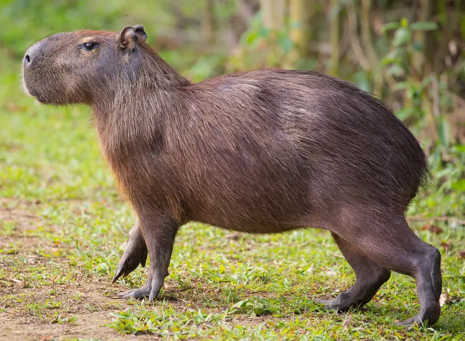
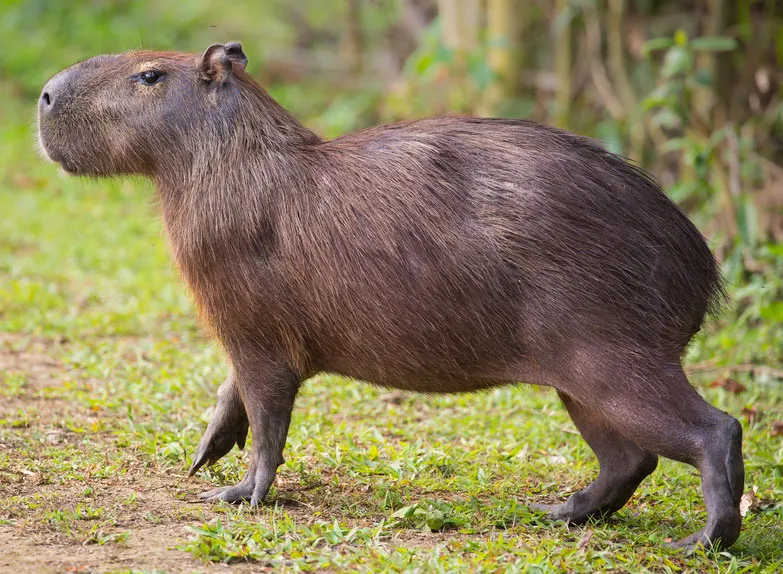

CAPYBARA Coming in at number two, fan favorite cabybara is a very soild choice. This member of the genus Hydrochoerus is the largest surviving rodent. Subsiting on a diet of grass, seaweed, clams, mussels, and other small plants, the capybara is very well suited for its South American home. The capybara can be kept as a pet without a licence.
 
